1. Introducción
Japón es un país fascinante que combina tradición milenaria y tecnología punta. Desde los rascacielos de Tokio hasta los templos ancestrales de Kioto, pasando por la paz de Miyajima y la historia de Hiroshima, cada día es una aventura.
Esta ruta de 14 días te llevará por los lugares más emblemáticos del país: Tokio (la capital vibrante), Kioto (el corazón espiritual), Hiroshima (historia y resiliencia), Miyajima (la isla sagrada) y Nagoya (con su volcán y aguas termales). El tren bala (Shinkansen) es tu mejor aliado para recorrer el país.
---3. 🏨 Dónde alojarse en Japón
🏙️ Tokio (Shinjuku) ⭐⭐⭐⭐
🏯 Tokio (Asakusa) ⭐⭐⭐
🏯 Kioto (Kawaramachi / Gion) ⭐⭐⭐⭐
🏛️ Hiroshima ⭐⭐⭐
🏯 Nagoya ⭐⭐⭐
⛩️ Miyajima (Itsukushima) ⭐⭐⭐⭐
Mi recomendación personal es alojarse en Shinjuku (Tokio) si es tu primera vez en la ciudad por su excelente conexión de trenes. En Kioto, elige Kawaramachi o Gion para estar cerca de los templos y del ambiente tradicional. En Hiroshima, busca cerca del Parque de la Paz. En Nagoya, cerca de la estación de tren para moverte fácilmente.
🚇 JR Pass (Japan Rail Pass): Imprescindible para moverte entre ciudades. Cuesta 50.000¥ (~330€) por 7 días y da acceso ilimitado a los trenes bala (Shinkansen) y a la mayoría de trenes JR. Actívalo cuando vayas a moverte entre ciudades (Tokio → Kioto → Hiroshima → Nagoya).
🏠 Alternativas: Los ryokanes (posadas tradicionales) ofrecen una experiencia auténtica con cena kaiseki y baños termales (onsen). Los capsula hotels (hoteles cápsula) son económicos para una noche.
🚫 Zonas a evitar: Evita Kabukicho (Tokio) por la noche (zona roja). En general, Japón es un país muy seguro.
5. Qué ver en Japón (ruta de 14 días)
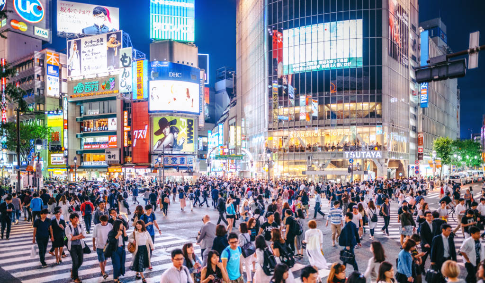
🚦 Shibuya (El cruce peatonal más famoso del mundo)
El cruce de Shibuya es el epicentro de la cultura juvenil de Tokio y uno de los lugares más emblemáticos de la ciudad.
La estatua de Hachiko (el perro fiel que esperó a su dueño durante 9 años en esta misma estación) es el punto de encuentro por excelencia. Las mejores vistas del cruce se obtienen desde la cafetería del edificio Starbucks o desde el mirador del edificio Magnet by Shibuya 109.

🎆 Luces de neón de Shinjuku (Tokyo's electric jungle)
Shinjuku es el corazón tecnológico y nocturno de Tokio. Sus calles están llenas de pantallas gigantes, carteles anime y un bullicio constante. Omoide Yokocho (el "callejón de los recuerdos") es una pequeña calle llena de minúsculos bares y restaurantes de brochetas (yakitori).
Kabukicho es el distrito rojo de Tokio, lleno de bares temáticos, clubes y luces de neón. Golden Gai es un laberinto de callejuelas con diminutos bares de copas (muchos con aforo de solo 5-10 personas), con una estética retro y mucho encanto.

🏯 Templo Senso-ji (El templo más antiguo de Tokio)
Fundado en el año 645, Senso-ji es el templo budista más antiguo de Tokio y uno de los más importantes de Japón. La entrada principal es la Puerta del Trueno (Kaminarimon).
Tras la puerta, la calle comercial Nakamise-dori (de unos 250 metros) está llena de puestos de comida tradicional, dulces (ningyo-yaki), souvenirs y artesanía.
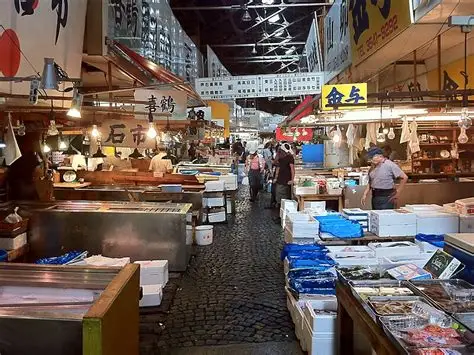
🐟 Mercado de pescado de Toyosu (El sucesor de Tsukiji)
El mercado de Toyosu es el sucesor del famoso mercado de Tsukiji (cerrado en 2018). Aquí se celebra la famosa subasta de atún (maguro) a las 5:30 de la mañana. Las gradas de observación permiten ver la subasta desde una zona acristalada (las plazas son limitadas).
La zona de restaurantes (Uogashi Yokocho) es el paraíso del sushi. Puedes comer sushi fresco a precios razonables (10-30$).
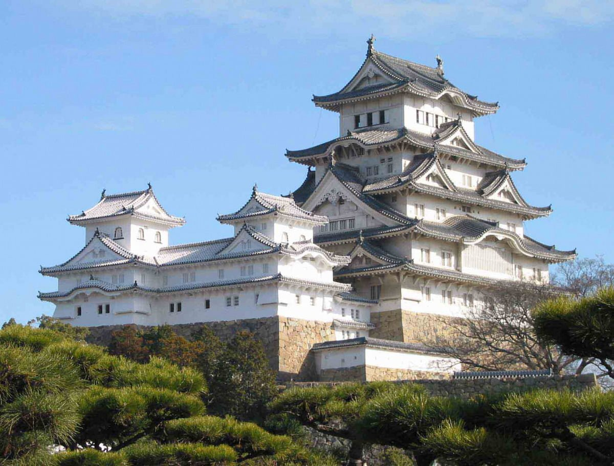
🏯 Palacio Imperial de Tokio (Residencia del Emperador)
El Palacio Imperial está situado en el centro de Tokio, sobre el antiguo Castillo de Edo. Es la residencia oficial de la Familia Imperial Japonesa. Los jardines exteriores (Higashi Gyoen y Kitanomaru Koen) son de acceso gratuito y muy agradables para pasear.
La entrada al recinto interior solo es posible mediante una visita guiada gratuita (en inglés o japonés) que se reserva en el día (las plazas son limitadas). Se puede ver el Puente de Dos Niveles (Nijubashi), la torre de vigilancia Fushimi-yagura y la plaza principal. La visita dura unos 75 minutos.
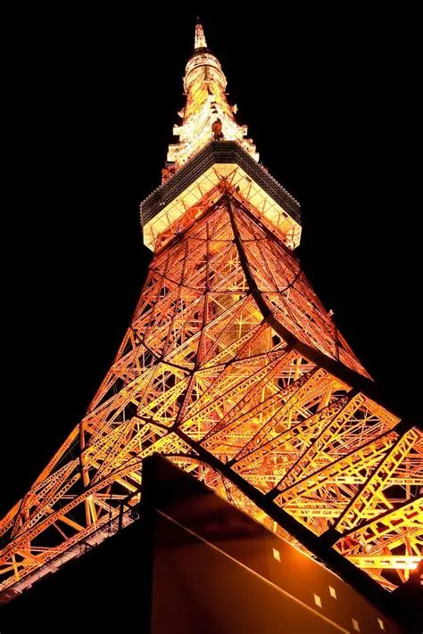
🗼 Torre de Tokio (El símbolo de la ciudad)
Inspirada en la Torre Eiffel, la Torre de Tokio (333 metros de altura) fue inaugurada en 1958 y es uno de los símbolos más reconocibles de la ciudad. Tiene dos miradores: el principal (a 150 metros) y el Top Deck (a 250 metros).
Desde arriba se ven los rascacielos de Shinjuku, la bahía de Tokio, el monte Fuji en días despejados y el estadio de béisbol de los Yomiuri Giants.
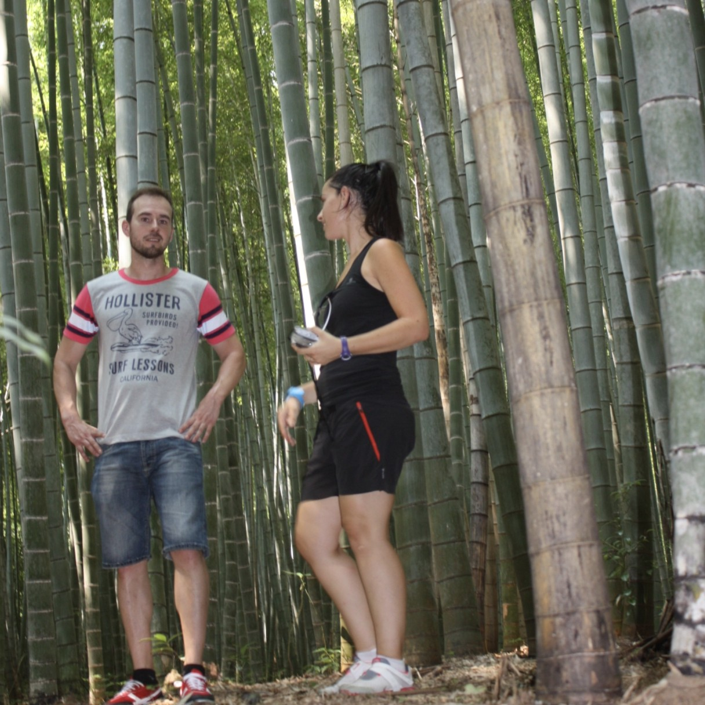
🌿 Bosque de Bambú de Arashiyama
Un sendero de unos 500 metros flanqueado por miles de tallos de bambú que se elevan hacia el cielo. El sonido del viento moviendo las cañas es tan especial que el gobierno japonés lo ha incluido en la lista de los "100 paisajes sonoros que deben conservarse".
El bosque está cerca del Templo Tenryu-ji (Patrimonio de la Humanidad) y del puente Togetsu-kyo (Puente de la Luna). Es uno de los lugares más fotografiados de Kioto, pero también uno de los más masificados. El truco es llegar al amanecer (7:00-8:00) o al atardecer.
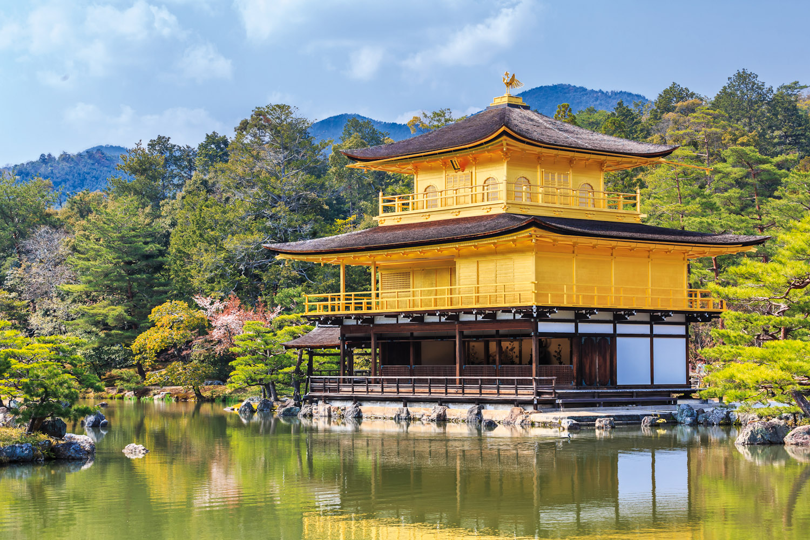
✨ Templo Kinkaku-ji (El Pabellón Dorado)
Uno de los templos más impresionantes de Japón. Las dos plantas superiores están completamente cubiertas de pan de oro puro, y se reflejan en el estanque Kyoko-chi (Estanque del Espejo). Fue construido en 1397 como villa de retiro del shōgun Ashikaga Yoshimitsu.
El contraste del dorado con el verde de los pinos y el azul del agua es espectacular. En invierno, con la nieve, es todavía más bonito.
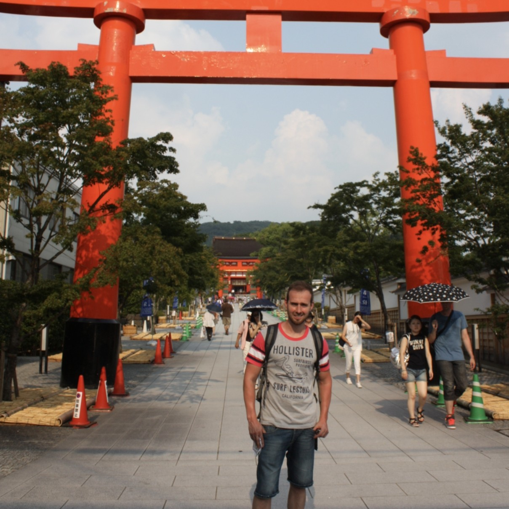
⛩️ Templo Fushimi Inari (El monte de los torii)
El santuario más famoso de Kioto, dedicado a Inari, el dios sintoísta del arroz y los negocios. Es famoso por sus miles de torii naranjas que forman un túnel a lo largo de un sendero que sube el monte Inari (233 metros de altura).
La caminata completa hasta la cima dura unas 2-3 horas (ida y vuelta) y pasa por varios santuarios secundarios. Cuanto más se sube, menos gente hay.
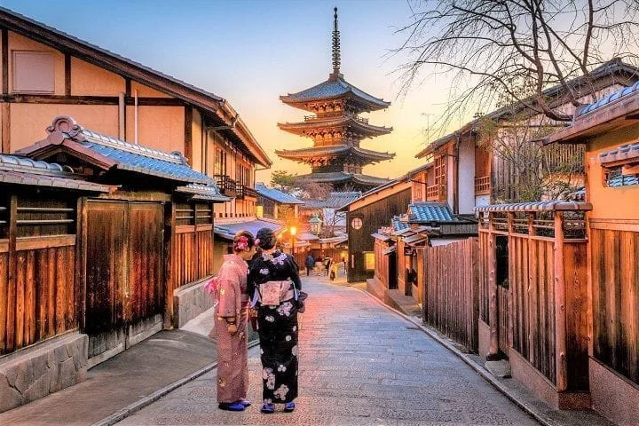
🎎 Barrio de Gion (El barrio de las geishas)
Gion es el barrio más famoso de Kioto para ver geishas (geiko) y aprendices (maiko). Sus calles empedradas, casas de madera tradicionales (machiya) y farolillos de papel crean una atmósfera de otro tiempo.
La calle Hanami-koji es la principal, llena de restaurantes tradicionales (ryotei), casas de té (ochaya) y tiendas de artesanía. La mejor hora para ver geishas es al atardecer (17:00-18:00), cuando se dirigen a sus trabajos. No les toques, no les hagas fotos con flash y no las sigas.
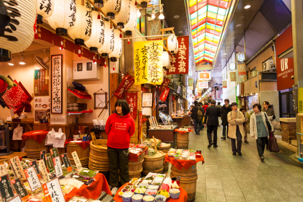
🍢 Mercado Nishiki (La cocina de Kioto)
Un mercado cubierto de unos 400 metros de longitud, conocido como "la cocina de Kioto". Hay más de un centenar de puestos y tiendas que venden productos frescos, pescado, encurtidos, dulces, utensilios de cocina y comida callejera.
Es perfecto para comer de pie (takoyaki, tamagoyaki, tofu, brochetas, sushi, etc.). También venden especialidades locales como yatsuhashi (dulce de canela) y tsukemono (encurtidos japoneses). El ambiente es caótico y auténtico. Lleva efectivo.
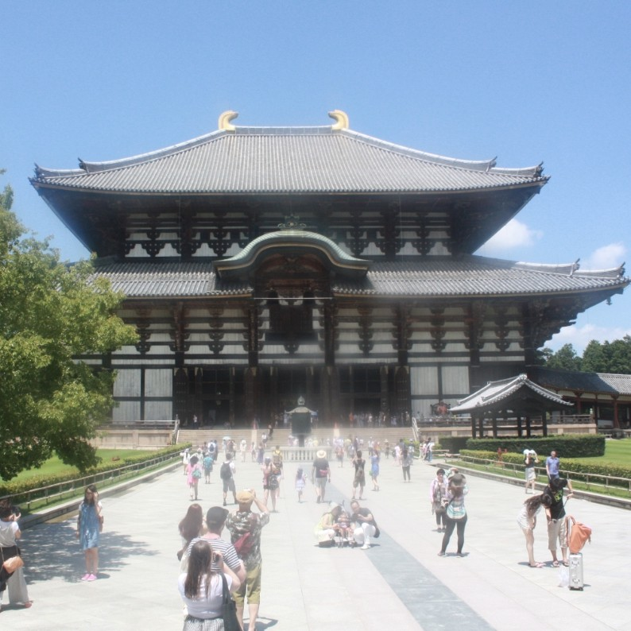
🦌 Templo Todai-ji (El Gran Buda de Nara y los ciervos sagrados)
El Templo Todai-ji es uno de los templos budistas más importantes de Japón, Patrimonio de la Humanidad. Su principal atracción es el Daibutsu (Gran Buda), una estatua de bronce de 15 metros de altura que pesa 500 toneladas y data del año 752.
El templo está en el Parque de Nara, famoso por sus cientos de ciervos sagrados (sika) que deambulan libremente. Según la leyenda, los dioses enviaron a los ciervos como mensajeros.
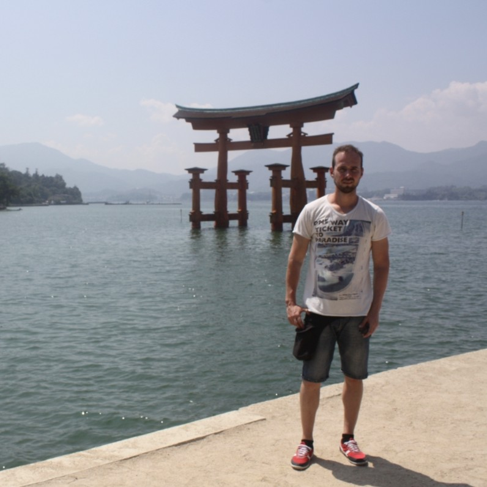
⛩️ Gran torii flotante de Miyajima (El torii en el mar)
El gran torii flotante (16 metros de altura) es el símbolo de la isla sagrada de Miyajima. Parece flotar sobre el agua durante la marea alta, creando una de las imágenes más icónicas de Japón.
Fue construido en 1168 (la versión actual data de 1875). El torii está hecho de madera de alcanfor (no usa clavos, sino ensamblajes). La estructura de 60 toneladas se sostiene por su propio peso. Durante la marea baja, se puede caminar hasta la base del torii. La mejor hora para verlo es al atardecer.
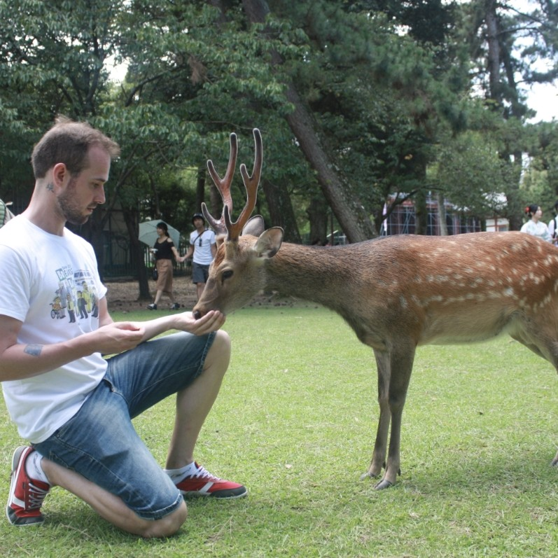
🏯 Templo Itsukushima (El templo que flota en el agua)
El Templo Itsukushima, Patrimonio de la Humanidad, está construido sobre pilotes para que parezca que flota en el agua durante la marea alta. Fue fundado en el siglo VI y reconstruido en 1168 por el clan Taira.
El pasillo cubierto conecta varios edificios, y la vista del torii desde el interior del templo es espectacular. También hay un escenario de danza (Noh) que se utiliza para ceremonias tradicionales. La combinación del torii, el mar, los ciervos y las montañas es de una belleza única.
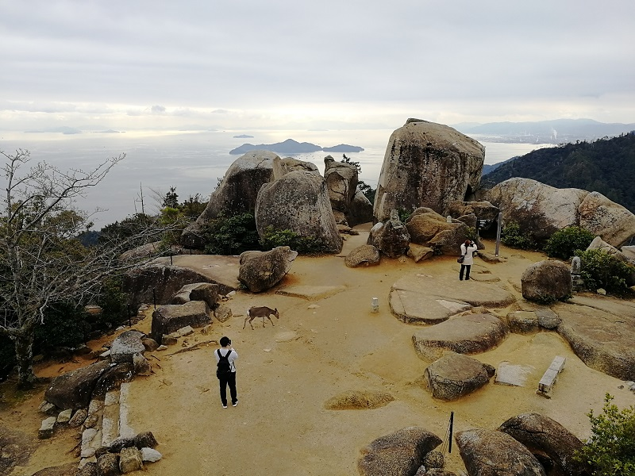
🏔️ Monte Misen (La cima sagrada de Miyajima)
El monte Misen (535 metros) es la montaña sagrada de Miyajima. En la cima hay un templo budista (Reikado) que alberga una llama que lleva ardiendo 1.200 años (desde que el monje Kobo Daishi la encendió durante su meditación).
Se puede subir a pie (2-3 horas por senderos rodeados de naturaleza) o en teleférico (9 minutos, 1.800¥ ida y vuelta).
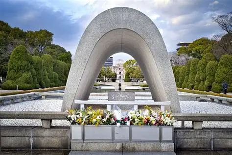
🕊️ Parque Memorial de la Paz de Hiroshima (Un lugar de reflexión)
El Parque Memorial de la Paz es un espacio verde en el centro de Hiroshima dedicado a las víctimas de la bomba atómica del 6 de agosto de 1945. Es un lugar de recogimiento y reflexión sobre la paz y la no violencia.
Entre sus elementos más significativos se encuentran la Cúpula de la Bomba Atómica (Genbaku Dome), el edificio que sobrevivió a la explosión y es Patrimonio de la Humanidad; el Monumento a la Paz de los Niños (con la estatua de Sadako Sasaki y las grullas de papel); y la Llama de la Paz (que arderá hasta que desaparezcan todas las armas nucleares).
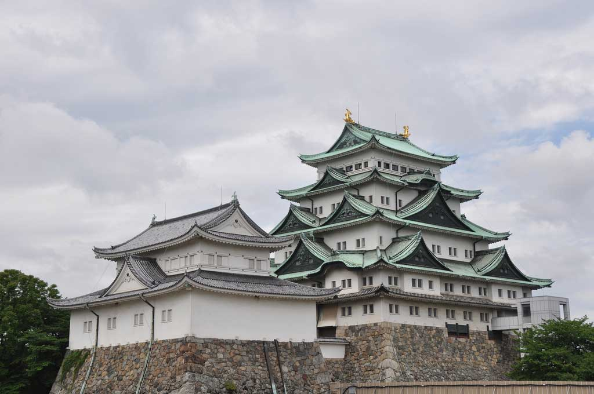
🏯 Castillo de Nagoya (El castillo de los peces dorados)
El Castillo de Nagoya es uno de los castillos más importantes de Japón. Fue construido en 1612 por Tokugawa Ieyasu y es famoso por sus dos peces dorados (kinshachi) en el tejado, que pesan 1,2 toneladas cada uno y están cubiertos de pan de oro.
El castillo original fue destruido en la Segunda Guerra Mundial (1945) y el actual es una reconstrucción de 1959. El interior es un museo sobre la historia del castillo y del clan Owari Tokugawa. En el recinto también están el Palacio Honmaru (reconstruido en 2018) y el jardín Ninomaru. Las vistas desde la torre principal son espectaculares.
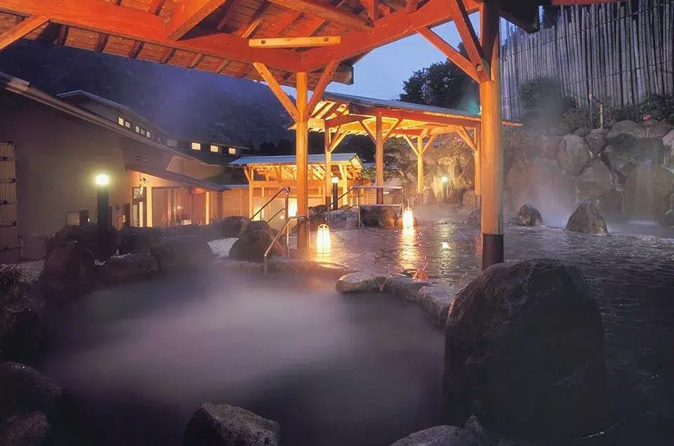
♨️ Sauna volcánica en Hakone (Onsen de aguas termales)
Hakone es uno de los destinos de aguas termales (onsen) más famosos de Japón, con vistas al monte Fuji. Las aguas volcánicas son ricas en minerales y tienen propiedades relajantes y terapéuticas. La experiencia onsen incluye bañarse en aguas calientes al aire libre (rotenburo) rodeado de naturaleza.
Algunos de los onsens más famosos son Hakone Yuryo (cerca de la estación de Hakone-Yumoto), Ten-yu (con vistas al valle) y los ryokanes tradicionales con baños privados. El agua puede estar a 40-45°C.

🗻 Monte Fuji (El símbolo de Japón)
El monte Fuji (3.776 metros) es la montaña más alta de Japón y uno de los símbolos más importantes del país. Es un volcán activo (aunque en reposo desde 1707). Fue declarado Patrimonio de la Humanidad en 2013.
Los mejores lugares para ver el Fuji son la región de los Cinco Lagos (Fuji Five Lakes), Hakone (con vistas desde el lago Ashi o el teleférico), o desde el tren bala (Shinkansen) en el trayecto Tokio-Kioto. El mejor momento del día es al amanecer (especialmente en invierno, cuando el aire es más limpio). En verano, las nubes pueden ocultar la cima.
El JR Pass (Japan Rail Pass) es imprescindible para moverte entre ciudades. Cuesta 50.000¥ (~330€) por 7 días y da acceso ilimitado a los trenes bala (Shinkansen) y a la mayoría de trenes JR. Actívalo el día que vayas de Tokio a Kioto.
Descarga Google Maps (funciona bien con el transporte público japonés) y Japan Travel by Navitime (para planificar rutas de tren). El efectivo sigue siendo rey en Japón (muchos restaurantes y templos solo aceptan efectivo).

{kind=link}
{kind=link}
{kind=link}
{kind=link}
{kind=link}
{kind=link}
{kind=link}
{kind=link}
{kind=link}
{kind=link}
{kind=link}
{kind=link}
{kind=link}
{kind=link}
{kind=link}
{kind=link}
{kind=link}